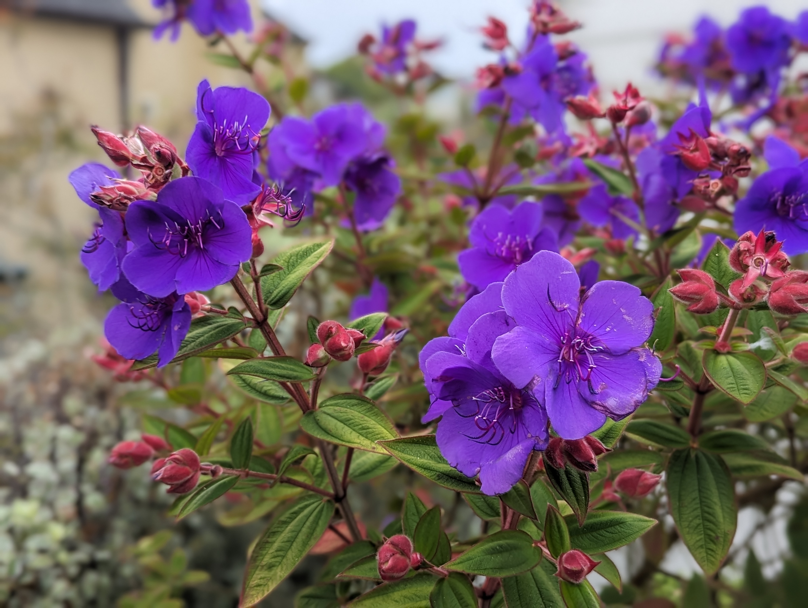
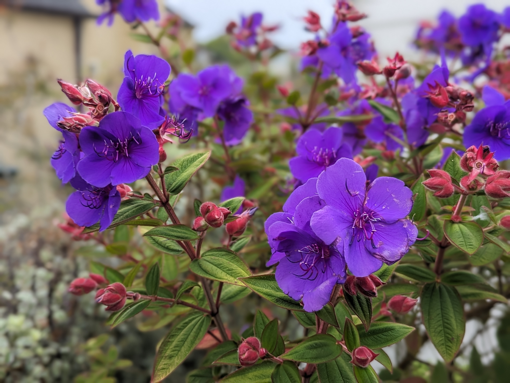

Joe Williams
Hello Vercel team, it’s a pleasure to meet you. Thanks for taking the time to consider my application and look at
my demo site.
About Me
I’ve worked in Customer Success for about 8 years now with 4 of those years being in support engineering and
spent the most recent 3.5 years as a solutions architect. I am passionate about my customers, learning more and
disseminating that information to my peers/customers in a meaningful and easily digestible form. I am currently
looking to expand my experience within the CS world with a venture into being a CSM myself. During my 8 years in
Martech, I’ve always worked alongside CSMs and held my own book of business with my CSM peers but I’ve never truly
stood in their boots.
My Experience
While my origins are in the world of Technical Theatre, I’ve spent my time since graduating college in Martech. I
initially started as an intern at AppsFlyer and over 4 years, I rose through the ranks. By the time I left, I was
a Senior Support engineer and had traveled to multiple locations globally to join various customer on-sites,
provide enablement sessions for my customers and peers. I traveled on occasion to our Israel HQ to receive
advanced training on specific integrations to further my knowledge and further assist my local peers. Needless to
say, I enjoyed taking in as much knowledge as possible to further not just myself but those around me and my
customers.
As with anything, every journey has an ending and in 2020, I found that my growth had stunted and that I’d
provided as much as I could to my peers and Appsflyer. I joined Iterable in order to take the next big leap in my
career and become a Solutions Architect. I wanted a job that provided a new challenge and where I could continue
to learn more about the world of Martech and its many players. Needless to say, I found everything I was looking
for and more. Much like AppsFlyer, I took great pride in my role and my opportunity to not only help my customers
but also my peers. Through my role as an SA, I was expected to be a source of knowledge so I became the unofficial
manager of the internal Solutions Knowledge base that was used by all GTM teams and even occasionally used by our
Product and Engineer teams to get a greater understanding of customer use cases, frequent blockers and common
misconceptions within the product. It was a great honor and no small task given our team had made over 350
different use case, FAQ and deep dive documents by the time I left Iterable in 2024. Beyond this, I was able to
grow my skill set and understanding of the Martech space and marketing automation & personalization. I traveled
far more frequently for customer on-sites and managed a unique book of business that included both customers and
partner accounts as I had a dual role as both a Partner SA and Customer SA which was uncommon within the team
(there were only 2 of us with this unique dual-role during my time at Iterable). I wore many other hats during my
time at Iterable but my customers were always my top priority.
My Interests & Hobbies
Having come from the world of Technical Theatre and studied at a liberal arts school, I enjoy watching theatre,
supporting small artists and other types of content creators (everything from gaming to youtube to TV/movies and
music). As of late, I’ve taken to the kitchen in order to up my skills and learning to appreciate and better
understand the lovely meals that often end up plated in front of me. Though if we’re being honest, I still have a
ways to go before I can truly create without the assistance of a cookbook.
At any moment I can be found picking up my tablet pen to draw, plucking the strings of my guitar or flailing my
way thru a recipe I was convinced I had properly prepared for only to realize I’m missing 1-2 ingredients for and
have to improvise. On rare occasions, I am inspired to take photos of beautiful landscaping and wonderful floral
arrangements (often used for my zoom backgrounds nowadays as seen below).
In short, I love all things art and creation and am always trying new things to see what sticks or just to better
understand the process behind it.
Thank you for your time and consideration!
-Joe Williams
Some Fun Photos
Some random photos I've taken over the years and used for zoom or phone backgrounds
 
